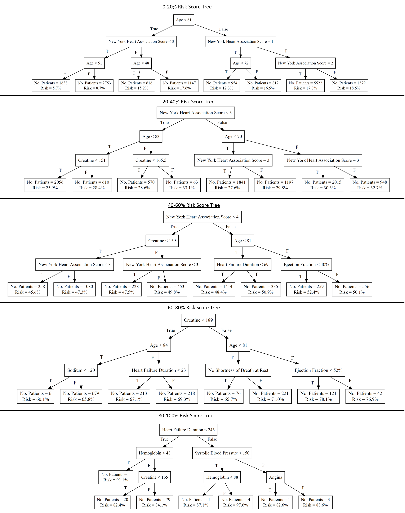
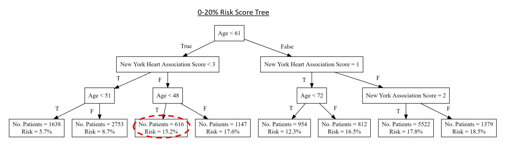

Thank you for your interest in our study.
The primary purpose of developing machine learning models for medicine is to help doctors synthesize the vast amount of information captured in the medical record in order to support decision making. This includes improving on prognostic and diagnostic scoring systems and developing algorithms to help support treatment choices.
The goal of this study is to understand whether and how complimentary information about machine learning models, including popular interpretability modules designed to provide additional information, can support doctors in their decisions to adopt a particular decision support model by increasing trust and confidence in the model's predictions.
Many risk scores are currently embedded in electronic health records; however these are based on logic rules and simpler statistical methods rather than Machine Learning algorithms, which can provide increased accuracy and other benefits, but may have perceived limitations in areas such as interpretability.
We are specifically looking to make Machine Learning algorithms more transparent, explainable, and interpretable by discovering how different model information and decision-support system design choices affect the confidence of medical experts in such systems.
In this study we will ask you to assess your trust in a real, trained machine learning model developed to help cardiologists estimate the probability of 12 month survival for patients that have just experienced heart failure. This may assist clinicians in making decisions regarding patient interactions and recommendations. All information about the development and accuracy of the model refers to real data about a model we developed and trained.
The study proceeds in two stages:
Machine Learning, and more generally Artificial Intelligence, models are gaining enthusiasm for their ability to produce highly accurate predictive and analytical insights. However, as many such models, including neural networks, are black-boxes, many fields of practice are reluctant to utilise these models without an ability to interpret their results or understand how a model generates its prediction. This appears especially true in medicine, as clinicians are responsible for the wellbeing of their patients.
This may be one reason that machine learning has not been readily incorporate into practice in the medical field, even though it has significant potential.
The aim of this study is to understand what type of model evidence and interpretability modules will increase users' trust in machine learning models utilised in decision-support systems.
We appreciate your interest in participating in this online survey. You have been invited to participate as an expert in medicine. Please read through these terms before beginning the survey. You will participate by ticking the Start box below. You may ask any questions before taking part by contacting the researcher (details below).
We, the University of Oxford, are investigating Machine Learning models in decision-support systems. You will be presented with a sequence of information on a machine learning model, followed by interactive patient scenarios and risk scores as may be presented by a decision-support system relying on the model described. You will then be asked to rate your confidence level with utilizing the system for decision-making purposes and support your answers.
The full survey should take about 15-20 minutes. No background knowledge is required. Your results will be utilised to determine the best interpretability modules and types of evidence to present to potential users of medical decision-support systems powered by machine learning models, and will be collected and utilised by the Computer Science and Engineering Departments at Oxford. No personally identifiable information will be collected or shared.
Please note that your participation is voluntary. You may withdraw at any point during the questionnaire for any reason, before submitting your answers, by closing the browser. None of your answers will then be collected.
Your answers will be completely anonymous, and we will use all reasonable endeavours to keep them confidential. No personally identifiable information, including but not limited to IP address, email address, or name, will be requested or collected.
If you select to include comments and feedback in optional text-boxes, please note that direct quotes may be used in publications and presentations. However, we will take every effort to ensure that identifiable details such as names of people, places, organisations, locations, and subspecialties will be aggregated or removed.
Information collected will be limited to nation of practice and area of expertise.
Your answers will be stored in a password-protected file and may be used in academic publications. Your IP address will not be stored. Research data will be stored for a minimum of three years after publication or public release.
The primary reseachers are: Owen Lahav at the University of Oxford, Dr. Nick Mastronarde at the University at Buffalo, Dr. Lydia Dumright at Cambridge University, and Prof. Mihaela van der Schaar at Cambridge University. These researchers are investigating Machine Learning models in decision-support systems.
You will be presented with a sequence of information on a machine learning model, followed by interactive patient scenarios and risk scores as may be presented by a decision-support system relying on the model described. You will then be asked to rate your confidence level with utilizing the system for decision-making purposes and support your answers.
We would like your permission to use your unidentifiable data in future studies, and to share data with other researchers (e.g. in online databases).
Any personal information that could identify you will not be collected or be removed before files are shared with other researchers or results are made public.
The principal researcher is Owen Lahav, who is attached to the Department of Computer Science at the University of Oxford. This project is being completed under the supervision of Mihaela van der Schaar of the Oxford Man Institute. This project has been reviewed by the University of Oxford’s Department of Computer Science’s Research Ethics Committee.
If you have a concern about any aspect of this project, please speak to the researcher at oren.lahav@gtc.ox.ac.uk who will do his best to answer your query. The researcher should acknowledge your concern within 10 working days and give you an indication of how they intend to deal with it.
If you are over 18 and have read the information above and agree to participate with the understanding that the data (including any personal data) you submit will be processed accordingly, please click the ‘Start’ box below to get started. By doing so you will be providing your consent to participate.
Please carefully review the information presented and answer the questions on the screen. Please do not use the back/forward or refresh buttons once you have started the survey.
This version of the survey is designed for Medical Doctors with clinical experience.
If you are ready to begin, please enter your passcode and press start:
Starting on the next screen, you will be presented with information and evidence about the Machine Learning Model that was used to create a decision-support system.
Please review each piece of information about the model and indicate whether you find it personally useful in increasing your comprehension of, and confidence in, the decision-support system based on it.
Click 'Next' to proceed
Please consider the following:
The model was trained using the Meta-analysis Global Group in Chronic Heart Failure (MAGGIC) data-set, which compiled patient data from 30 studies including both randomized clinical trials and observational registries.
The data set included 30,389 patients who have experienced a heart failure event. Of these, 18.8% died within 1 year of experiencing heart failure.
Note that all risk scores reported are for patients who have already experienced heart failure.
Of the 30,389 patients, 66% were male. The average age was 68, with a standard deviation of 12 years.
31 patient characteristics, symptoms, and other features were collected, including:
Missing values were imputed using standard methods (Multiple Imputation by Chained Equations), which provide accurate estimates for missing or not-recorded patient symptoms and characteristics
More details about the MAGGIC data-set, including a full list of features, can be found in (Pocock et al., 2012).
How useful do you find this information about the data used to train the model powering a decision-support system for heart failure patients?
1: Not useful - This information does not impact my opinion of the model or decision-support systemPlease provide any comments or reasons supporting your answer. Note that anonymised direct quotes may be used in publications and presentation.
The model utilised was a Neural Network, a sophisticated deep learning algorithm that has seen increased attention in recent years, as multiple studies have shown it to vastly outperform simpler linear models and other methods that have been traditionally utilised to generate risk scores in medicine.
A neural network is a Machine Learning algorithm inspired by the human brain, utilizing connected nodes organised in hidden layers. With a single node and layer, the network would be essentially equivalent to the linear predictive model known as Logistic Regression. However, adding nodes and layers enables the network to learn more complex, non-linear patterns in the data.
The network uses optimization techniques and non-linear activation functions to automatically discover these complex patterns and learn how to make predictions from data. You can find more information here.
Below is a generic image of a neural network by Machine Learning expert Michael Nielsen:
The network takes in a large amount of data, in the form of patient characteristics or features, and outputs the probability of a patient dying within 1 year of a heart failure event.
The Neural Network we utilised contained 2 hidden layers of 100 and 20 nodes respectively. In general, as explained here, network architecture, including the number of nodes and layers, must be tweaked and tuned to ensure the network is large enough to capture complex data patterns, but not too large compared to the size of the data-set, which would result in over-fitting and poor predictive performance in practice. The architecture we have selected of 2 layers with 100 and 20 nodes, respectively, was tuned and found to achieve highly accurate results.
The model was trained using 10-fold cross validation, using 90% of the data for training and the rest for testing. This was repeated 10 times, and we report average figures over the run. For more information on cross-validation, click here.
How useful do you find this information about the architecture and training methodology behind the model powering a decision-support system for heart failure patients?
1: Not useful - This information does not impact my opinion of the model or decision-support systemPlease provide any comments or reasons supporting your answer. Note that anonymised direct quotes may be used in publications and presentation.
The neural network showcases 81.26% accuracy, which means that 81% of the test cases were classified correctly by the model.
The model's AUC-ROC (area under the receiver operating curve), which is equal to the C-Index, is 0.725, with a standard deviation of 0.0054, averaged over 10 runs. This suggests high accuracy for the type of data, as we demonstrate below by comparing our network to a simple linear model and a risk score currently in use. For more information on the C-Statistic or AUC-ROC, click here.
The model's ROC curve is below:
In addition, the model achieves an AUC-PR (area under the precision recall curve) of 0.376. For more information about precision and recall, click here.
The neural network's accuracy values for both AUC-ROC and AUC-PR are much higher than the best linear regression model trained on the same data. They are also significantly higher than the accuracy of the MAGGIC Risk Score, an accepted risk score trained on the same data and developed by the European Society of Cardiology and other researchers. For information on the MAGGIC Risk Score, click here. The chart below summarises these results:
How useful do you find this information about the accuracy of the model powering a decision-support system for heart failure patients?
1: Not useful - This information does not impact my opinion of the model or decision-support systemPlease provide any comments or reasons supporting your answer. Note that anonymised direct quotes may be used in publications and presentation.
We have trained a neural network to predict the risk, or probability that a given patient who has suffered heart failure will die within one year of the heart failure event.
The model was trained on the data-set discussed previously, containing over 30K patients and 31 patient characteristics and features ranging from age to their New York Heart Association Score.
As shown previously, the neural-network outperforms simple linear models. However, the network is a black-box, which means it is impossible to tell how patient characteristics contribute to the outputted risk scores it produces.
In order to better understand how the model produces a prediction, black-box models, like neural networks, can be approximated locally using simpler models, including linear regression models.
To create local approximations, after the neural network generated its risk scores, a different linear model was trained for each quintile of risk: 0-20%, 20-40%, etc.
The Root Mean-Squared Error between the neural network model and the linear approximation is 0.036, suggesting the 2 models are very close.
Below is a summary of the coefficients for each local linear model:
Since the linear approximation and the neural network models are so close, the value of each characteristic’s coefficient closely approximates their contribution to the variability in predicted patient risk score.
For instance, the negative coefficient for Beta blocker prescriptions suggests a negative correlation between this variable and risk of death, though the magnitude differs among risk strata. Some factors, such as shortness of breath at rest or gender, are only significant for high risk groups.
How useful do you find this local linear approximation of the model powering a decision-support system for heart failure patients?
1: Not useful - This information does not impact my opinion of the model or decision-support systemPlease provide any comments or reasons supporting your answer. Note that anonymised direct quotes may be used in publications and presentation.
We have trained a neural network to predict the risk, or probability that a given patient who has suffered heart failure will die within one year of the heart failure event.
The model was trained on the data-set discussed previously, containing over 30K patients and 31 patient characteristics and features ranging from age to their New York Heart Association Score.
As shown previously, the neural-network outperforms simple linear models. However, the network is a black-box, which means it is impossible to tell how patient characteristics contribute to the outputted risk scores it produces.
In order to better understand how the model produces a prediction, black-box models, like neural networks, can be approximated using simpler models, such as decision trees.
To create local approximations, after the neural network generated its risk scores, a different decision tree was trained for each quintile of risk: 0-20%, 20-40%, etc.
The Root Mean-Squared Error between the neural network model and the decision tree approximation is 0.046, suggesting the 2 models are very close.
Click below for a summary of the depth-3 trees for each local linear model:

Note that each risk stratum utilises different patient characteristics for classification. Few patients are classified in the 80-100% class.
Since the models are so close, we can view the trees as an approximation explaining how each patient is assigned a risk score based on their characteristics and symptoms.
How useful do you find this decision-tree approximation of the model powering a decision-support system for heart failure patients?
1: Not useful - This information does not impact my opinion of the model or decision-support systemPlease provide any comments or reasons supporting your answer. Note that anonymised direct quotes may be used in publications and presentation.
Please consider the following question based on all the Model information and evidence seen so far:
Based on the information seen so far, how would you rate your confidence in the machine learning model and a decision-support system based on it?
1: Not at all confident, would not even consider looking at the model and its prediction as part of my decision-making processWe next focus on a Decision Support System providing Risk Assessment. Such a system is designed to support the decision-making processes of doctors facing patients exhibiting certain characteristics, symptoms, and conditions.
The system supports decisions on relevant medical actions by providing a predicted risk score, as well as background and explanations of the score.
The system does not make treatment recommendations. However, the information provided may assist treatment decisions by explaining how different patient risk factors may contribute to predicted outcomes.
The following diagram explains the purpose and workings of a Decision Support System (DSS) powered by the Neural Network method described in Part 1:
Note that the DSS is based on the Neural Network trained on data of over 30,000 patients. As new patients consult with their doctors, the clinician may refer to the decision-support system. The DSS will produce a predicted risk score based on the patient's characteristics, and may additionally output relevant local, high-interpretable linear or decision-tree models. The information produced may be utilised by a clinician to inform medical actions and impact patient outcomes.
Starting on the next screen, you will be presented with a series of 4 patient scenarios.
Note that these patients were not part of the model's training set, and have been selected at random. from a testing set held aside of the original data-set.
Each patient will be accompanied by a risk score generated using the Neural Network model discussed previously. In addition, medical information about the individual patients will be presented as well.
Please evaluate this information, and rate your satisfaction with the model and the Decision Support System as a whole.
Click 'Next' to proceed
The following represents a patient scenario. A Decision Support System outputs a risk score based on the patient's characteristics. A doctor may choose to use the information below, including the risk score, to inform their medical decisions.
Please examine the following patient:
Patient Adam, a 43-year-old Caucasian male, experienced heart failure.
Our model predicts that the probability of Adam dying in the one year following the event is 15.9%.
Adam has a BMI of 26.5, and exhibits rales and shortness of breath at exercise.
Adam has marked limitation of physical activity (New York Heart Association Score Class III).
Adam has not been prescribed either ACE inhibitors or Beta blockers.
Adam admits to being an occasional smoker. He does not suffer from diabetes.
Click below to interact with the system
Examine how the following factors might impact Adam's predicted risk score, based on the Neural Network model utilised.
Note: This is a demo only. A full decision-support system will include other patient characteristics. 2 randomly chosen characteristics that impact the risk score were included here.
This interactive tool is not meant to propose medical actions. Its goal is to enable exploring of how different patient characteristics may impact their risk score.
Click below to view the details of a linear approximation model for Adam's Risk Strata of 0-20%
Machine Learning models, including the neural network powering this decision-support system, can be approximated locally using simpler, highly interpretable linear regression models.
A different model is trained for each risk quintile, 0-20%, 20-40%, etc.
Below are the coefficients for all significant characteristics of Adam's local linear approximation model. Note that the magnitude of the coefficients signifies how much the patient characteristic contributes to the risk score.
Click below to view the details of a decision tree approximation model for Adam's Risk Strata of 0-20%
Machine Learning models, including the neural network powering this decision-support system, can be approximated locally using simpler, highly interpretable linear decision tree models.
A different tree is trained for each risk quintile, 0-20%, 20-40%, etc.
Below is a representation of Adam's local depth-3 decision tree approximation.

Click below to find the patient's status 1 year after the heart failure event
Patient Adam did not die in the year following diagnosis and in fact has survived for 7 years past his initial heart failure event.
Based on the information seen so far, including Patient Adam, how satisfied are you with the Decision Support System powered by a Neural Network model?
1: Completely unsatisfied, not at all likely to use the system in supporting my medical decision-making for heart failure patientsPlease provide any comments or reasons supporting your answer. In particular, you may specify which components above were most helpful in establishing your trust in the model and predicted risk output. Note that anonymised direct quotes may be used in publications and presentation.
The following represents a patient scenario. A Decision Support System outputs a risk score based on the patient's characteristics. A doctor may choose to use the information below, including the risk score, to inform their medical decisions.
Please examine the following patient:
Patient Betty, 86-year-old non-Caucasian female, experienced heart failure.
Our model predicts that the probability of Betty dying in the one year following the event is 83.5%.
Betty has a BMI of 21.6, and exhibits rales and shortness of breath at rest.
Betty is unable to perform physical activity without discomfort (New York Heart Association Score Class IV).
Betty has not been prescribed either ACE inhibitors or Beta blockers.
Betty does not smoke, and does not suffer from diabetes. She does suffer from angina.
Click below to interact with the system
Examine how the following factors might impact Betty's predicted risk score, based on the Neural Network model utilised:
Note: This is a demo only. A full decision-support system will include other patient characteristics. 2 randomly chosen characteristics that impact the risk score were included here.
This interactive tool is not meant to propose medical actions. Its goal is to enable exploring of how different patient characteristics may impact their risk score.
Click below to view the details of a linear approximation model for Betty's Risk Strata of 80-100%
Machine Learning models, including the neural network powering this decision-support system, can be approximated locally using simpler, highly interpretable linear regression models.
A different model is trained for each risk quintile, 0-20%, 20-40%, etc.
Below are the coefficients for all significant characteristics of Betty's local linear approximation model. Note that the magnitude of the coefficients signifies how much the patient characteristic contributes to the risk score.
Click below to view the details of a decision tree approximation model for Betty's Risk Strata of 80-100%
Machine Learning models, including the neural network powering this decision-support system, can be approximated locally using simpler, highly interpretable linear decision tree models.
A different tree is trained for each risk quintile, 0-20%, 20-40%, etc.
Below is a representation of Betty's local depth-3 decision tree approximation.
Click below to find the patient's status 1 year after the heart failure event
Patient Betty unfortunately passed away 3 months following her heart failure event.
Based on the information seen so far, including Patient Betty, how satisfied are you with the Decision Support System powered by a Neural Network model?
1: Completely unsatisfied, not at all likely to use the system in supporting my medical decision-making for heart failure patientsPlease provide any comments or reasons supporting your answer. In particular, you may specify which components above were most helpful in establishing your trust in the model and predicted risk output. Note that anonymised direct quotes may be used in publications and presentation.
The following represents a patient scenario. A Decision Support System outputs a risk score based on the patient's characteristics. A doctor may choose to use the information below, including the risk score, to inform their medical decisions.
Please examine the following patient:
Patient Clara, 54-year-old Caucasian female, experienced heart failure.
Our model predicts that the probability of Clara dying in the one year following the event is 60.5%.
Clara has a BMI of 33.4, and exhibits rales and shortness of breath at rest.
Clara has some limitation of physical activity (New York Heart Association Score Class II).
Clara has been prescribed ACE inhibitors.
Clara is diabetic, and smokes regularly.
Click below to interact with the system
Examine how the following factors might impact Clara's predicted risk score, based on the Neural Network model utilised:
Note: This is a demo only. A full decision-support system will include other patient characteristics. 2 randomly chosen characteristics that impact the risk score were included here.
This interactive tool is not meant to propose medical actions. Its goal is to enable exploring of how different patient characteristics may impact their risk score.
Click below to view the details of a linear approximation model for Clara's Risk Strata of 60-80%
Machine Learning models, including the neural network powering this decision-support system, can be approximated locally using simpler, highly interpretable linear regression models.
A different model is trained for each risk quintile, 0-20%, 20-40%, etc.
Below are the coefficients for all significant characteristics of Clara's local linear approximation model. Note that the magnitude of the coefficients signifies how much the patient characteristic contributes to the risk score.
Click below to view the details of a decision tree approximation model for Clara's Risk Strata of 60-80%
Machine Learning models, including the neural network powering this decision-support system, can be approximated locally using simpler, highly interpretable linear decision tree models.
A different tree is trained for each risk quintile, 0-20%, 20-40%, etc.
Below is a representation of Clara's local depth-3 decision tree approximation.
Click below to find the patient's status 1 year after the heart failure event
Patient Clara was alive one year after her heart failure event. However, she passed away 2 years later.
Based on the information seen so far, including Patient Clara, how satisfied are you with the Decision Support System powered by a Neural Network model?
1: Completely unsatisfied, not at all likely to use the system in supporting my medical decision-making for heart failure patientsPlease provide any comments or reasons supporting your answer. In particular, you may specify which components above were most helpful in establishing your trust in the model and predicted risk output. Note that anonymised direct quotes may be used in publications and presentation.
The following represents a patient scenario. A Decision Support System outputs a risk score based on the patient's characteristics. A doctor may choose to use the information below, including the risk score, to inform their medical decisions.
Please examine the following patient:
Patient Drew, a 70-year-old non-Caucasian male, experienced heart failure.
Our model predicts that the probability of Drew dying in the one year following the event is 72.0%.
Drew has a BMI of 24.2, and exhibits rales and shortness of breath at rest.
Drew is unable to perform physical activity without discomfort (New York Heart Association Score Class IV).
Drew has been Not been prescribed ACE inhibitors or Beta blockers.
Drew is diabetic, but Drew does does not effectively manage his diabetes. He is a non-smoker.
Click below to interact with the system
Examine how the following factors might impact Drew's predicted risk score, based on the Neural Network model utilised:
Note: This is a demo only. A full decision-support system will include other patient characteristics. 2 randomly chosen characteristics that impact the risk score were included here.
This interactive tool is not meant to propose medical actions. Its goal is to enable exploring of how different patient characteristics may impact their risk score.
Click below to view the details of a linear approximation model for Drew's Risk Strata of 60-80%
Machine Learning models, including the neural network powering this decision-support system, can be approximated locally using simpler, highly interpretable linear regression models.
A different model is trained for each risk quintile, 0-20%, 20-40%, etc.
Below are the coefficients for all significant characteristics of Drew's local linear approximation model. Note that the magnitude of the coefficients signifies how much the patient characteristic contributes to the risk score.
Click below to view the details of a decision tree approximation model for Drew's Risk Strata of 60-80%
Machine Learning models, including the neural network powering this decision-support system, can be approximated locally using simpler, highly interpretable linear decision tree models.
A different tree is trained for each risk quintile, 0-20%, 20-40%, etc.
Below is a representation of Drew's local depth-3 decision tree approximation.
Click below to find the patient's status 1 year after the heart failure event
One year after his heart failure event, Patient Drew was alive. He unfortunately passed away 16 months following his heart failure event.
Based on the information seen so far, including Patient Drew, how satisfied are you with the Decision Support System powered by a Neural Network model?
1: Completely unsatisfied, not at all likely to use the system in supporting my medical decision-making for heart failure patientsPlease provide any comments or reasons supporting your answer. In particular, you may specify which components above were most helpful in establishing your trust in the model and predicted risk output. Note that anonymised direct quotes may be used in publications and presentation.
Based on both the Model Information seen in Part 1 and the patient scenarios seen in Part 2, please answer the following:
Do you feel that the neural network model presented, which was used to power a decision-support system, augments your judgement and constitutes a valuable contribution to medical decision-making processes?
While this survey is anonymous, we do ask for some optional, high-level details about your personal medical background and prior experience with machine learning that will allow us to analyze data at a deeper level.
A. Please specify your area of medical expertise (ex. cardiology, internal medicine, generalist, etc.)
B. In what country do you currently practice medicine? (if more than one country list both, if not currently practicing, list the last country that you practiced in and indicate that you are retired/ not currently practicing)
C. Which of the following best describe your past experience with machine learning prior to taking this survey?
1: I knew very little about machine learning and its applicability to medicineD. Which of the following best describe your experience with decision-support systems prior to taking this survey?
1: I have not heard of them or have never had a chance to interact with them in the past
Thank you very much for taking our survey. Your anonymous results will be used as part of a statistical and ML analysis to determine the best evidence to present to potential users of decision-support systems that rely on sophisticated ML models.
We trust that your efforts will be highly significant in helping design Decision-Support systems for prognostic predictions based on Machine Learning models that are useful and make valuable contributions to prognostics and medicine in general.
Thank you!
Part 5: Comments
Please leave any feedback, comments, or concerns about the survey you have just completed.
In particular, you may address the following:
Note that anonymised direct quotes may be used in publications and presentation.
Important: Do not include any personally identifiable information, such as name or email address, in your answer below.
You may also email the primary researcher at oren.lahav@gtc.ox.ac.uk.